Relación de tablas¶
Relación de tablas¶
Una de las grandes ventajas de las bases de datos es que podemos tener en varias tablas, relacionadas entre ellas, con toda la información que necesitamos almacenar, en lugar de una única tabla enorme con toda la información.
¿Qué conseguimos con esto? Para responder a esta pregunta mejor pongamos un ejemplo: imaginemos que se quiere guardar el género cinematográfico de las películas que se van almacenando. Se podría pensar en añadir una nueva columna a la tabla Peliculas que se llamara Género, de manera que por cada película almacenada también tuviera su género.
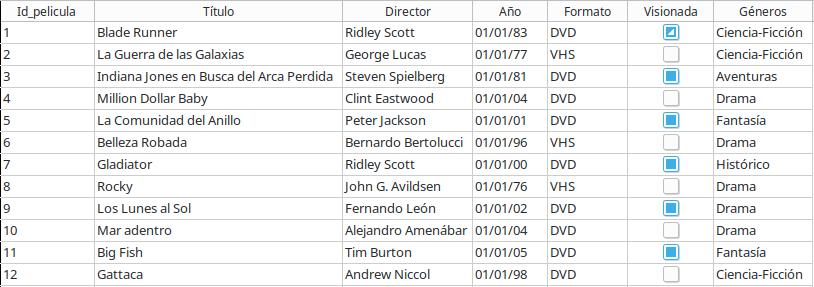
Si nos fijamos en esta solución, podemos ver que se está repitiendo el mismo valor muchas veces.
Por ejemplo, el género Ciencia-Ficción aparece en varias filas.
Esto provoca tres problemas principales:
- Se obliga a escribir muchas veces el mismo dato. Por ejemplo,
Ciencia-Ficciónaparece en cuatro filas yDramaen otras tantas. - Aumenta la posibilidad de cometer errores al teclear.
- Dificultad para modificar la información. Por ejemplo, si los críticos de cine deciden que el género
Ciencia-Ficcióndebe renombrase aFicción-Científicaentonces nos tocará actualizar muchos registros manualmente .
La solución a los problemas anteriores está en separar la información que aparece repetida continuamente en una nueva tabla e indicar de alguna forma en nuestra base de datos que hay filas de la tabla Peliculas y de la tabla Generos que están relacionadas .
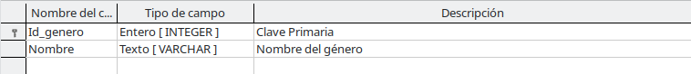

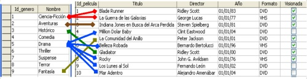
Otro ejemplo que nos ayude a comprender aún mejor la necesidad de poder establecer relaciones entre tablas sería la relación de Peliculascon la tabla Interpretes. Si quisieramos almacenar información acerca de los principales intérpretes con cada una de nuestra películasa, no nos quedaría otra opción que añadir nuevas columnas a nuestra tabla Peliculas donde guardar la información acerca de sus protagonistas.
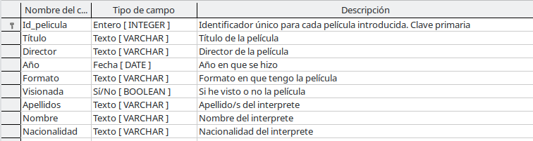
Pero esta solución nos deja muchas incógnitas sin resolver. Por ejemplo:
- Si no se conoce el nombre de ninguno de los intérpretes de una película se va a tener que dejar en blanco esos tres campos para cada una de las películas para las que no se conocen sus intérpretes.
-
Si de una película se conoce más de un interprete se tendrá que optar entre solo almacenar uno de ellos o bien, repetir en nuevas filas toda la información de las películas para las que se conoce más de un protagonista, junto con cada uno de los intérpretes de dicha película.
- En el ejemplo siguiente vemos como hemos tenido que repetir información de dos películas (Gattaca) porque conocíamos dos intérpretes de las mismas
- Por otro lado, hay intérpretes (Harrison Ford y Javier Bardem) que nos aparecen varias veces por ser protagonistas en varias de nuestras películas.
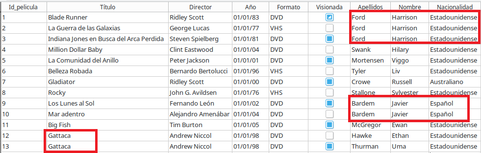
Por tanto, parece más recomendable dejar la tabla Peliculas como estaba al inicio de esta unidad y relacionarla con la tabla Interpretes.
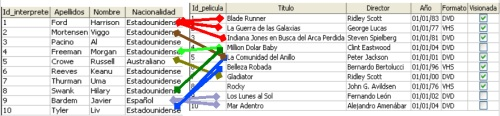
Tipos de relaciones entre tablas¶
Las tablas se pueden relacionar de tres formas distintas:
-
↔️ Uno a muchos (1 a N)
Un registro se relaciona con muchos.
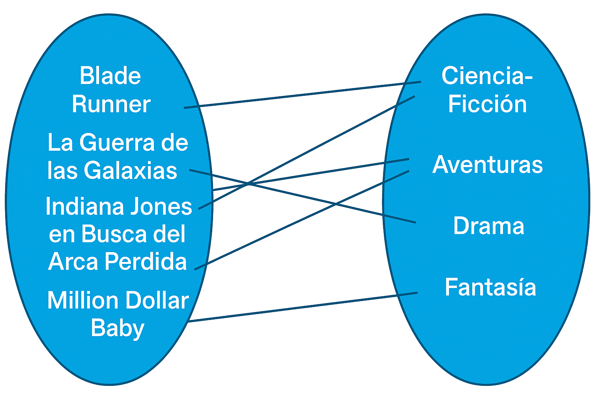
1 a N - Un género puede tener muchas películas.
-
↔️ Muchos a muchos (N a N)
Muchos registros se relacionan entre sí
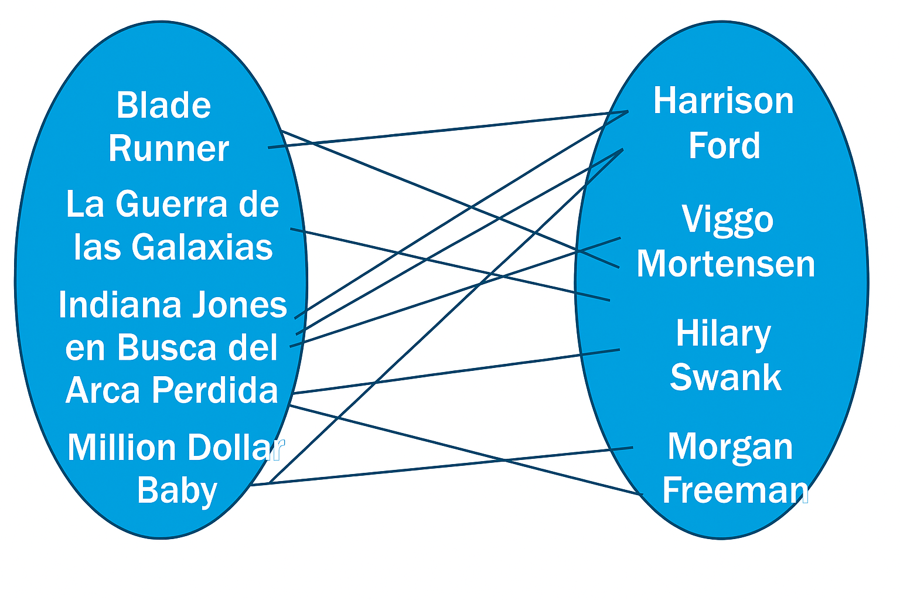
N a N - Una película puede tener varios intérpretes y viceversa.
-
↔️ Muchos a muchos (1 a 1)
Un registro se relaciona con uno solo
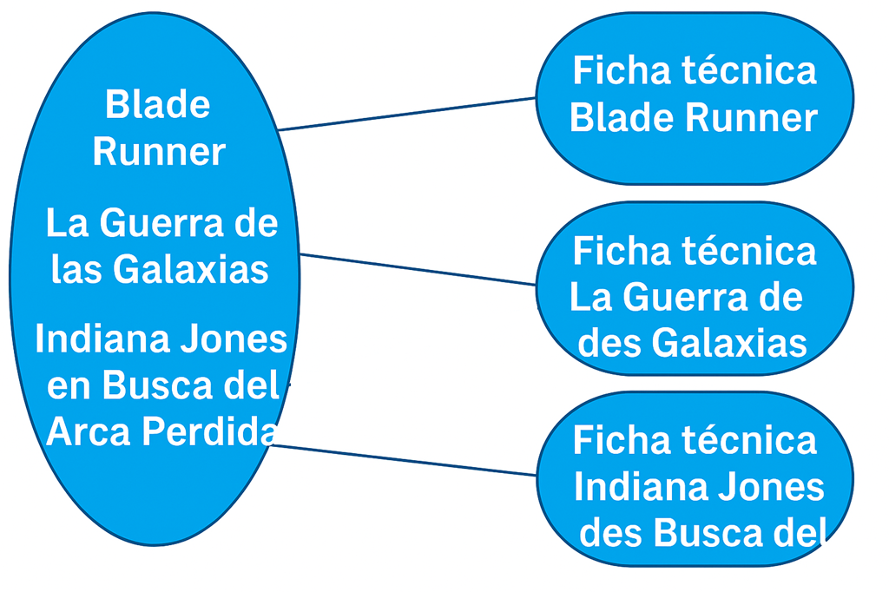
1 a 1 - Una película tiene sólo una ficha técnica detallada.
Establecer relaciones entre tablas¶
Para poder relacionar tablas se utilizan las claves ajenas (foreign key). Una clave ajena es un campo de una tabla que hace referencia a la clave primaria de otra tabla.
En función del tipo de relación existente entre las tablas, los pasos para establecerlas en LibreOffice Base pueden variar. En este apartado se explican las reglas básicas para crear relaciones uno a muchos y, posteriormente, muchos a muchos.
Establecer relaciones uno a muchos (1 a N)¶
Para este tipo de relaciones, debemos crear una nueva columna en la tabla del lado "muchos", de modo que cada fila pueda indicar claramente a qué fila de la otra tabla está relacionada.
¿Cómo sabemos qué tabla está en el lado de muchos?"
Em el ejemplo de la relación entre Generos y Peliculas
- Un género puede estar asociado a muchas películas.
- Cada película pertenece a un solo género.
Por tanto, la tabla Peliculas es el lado del muchos, y es en ella donde debemos crear el nuevo campo.
- Creamos en
Peliculasun nuevo campoGenerodel mismo tipo que la clave principal deGeneros(Id_generode tipo Integer). - Los valores de esta columna corresponden a las filas existentes en la tabla
Generos(por ejemplo,Drama,Comedia).
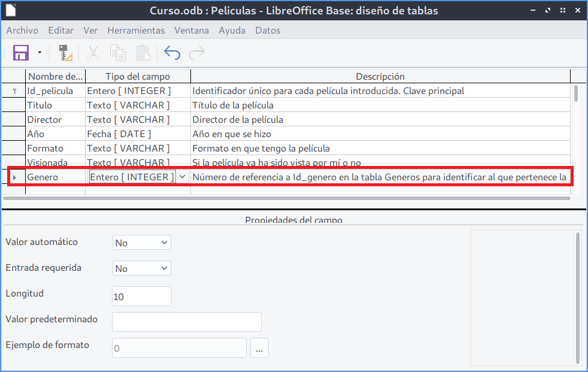
¿Por qué el campo Genero solo puede tomar ciertos valores?
El campo Genero se utiliza para referenciar una fila existente de la tabla Generos.
No tendría sentido que una película tuviera como género el valor Drama si dicho identificador no existe en la tabla Generos.
Esto garantiza la integridad de los datos y evita errores en la base de datos.
Una vez creada la nueva columna, es necesario indicar explícitamente a LibreOffice Base que ambas tablas están relacionadas.
Para ello, seguimos los siguientes pasos:
-
Accedemos al menú Herramientas > Relaciones…
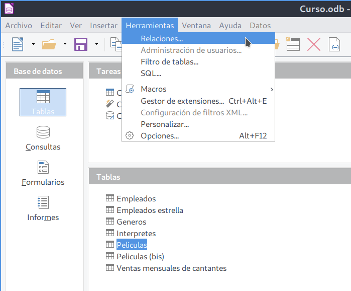
Apertura de la ventana Relaciones… -
En la ventana que aparece, añadimos las tablas que queremos relacionar:
- Seleccionamos la tabla
Generosy pulsamos Añadir. - Repetimos el proceso con la tabla
Peliculas. - Cerramos la ventana de selección.
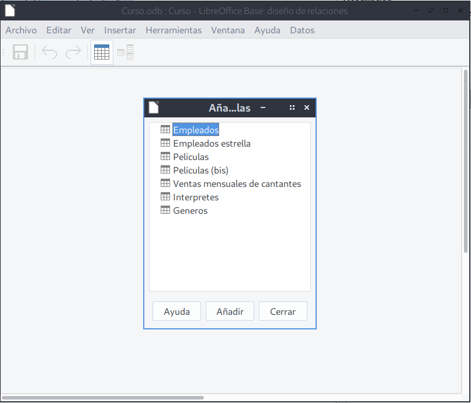
Selección de las tablas a relacionar - Seleccionamos la tabla
-
A continuación, indicamos la relación entre los campos:
- Hacemos clic en el icono Añadir nueva relación de la ventana Relaciones.
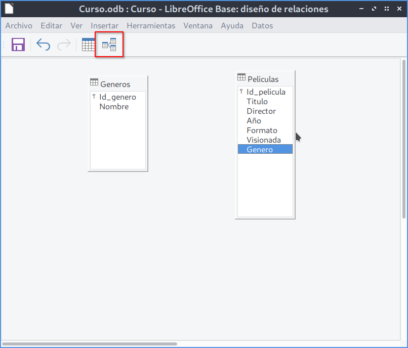
Icono para añadir nueva relación - Hacemos clic sobre el campo
Id_generode la tablaGeneros. - Sin soltar el ratón, arrastramos hasta el campo
Generode la tablaPeliculas. - Soltamos el ratón para crear la relación.
-
Automáticamente aparecerá una línea que conecta ambos campos:
- En el lado de
Generosaparecerá un 1. - En el lado de
Peliculasaparecerá una n.
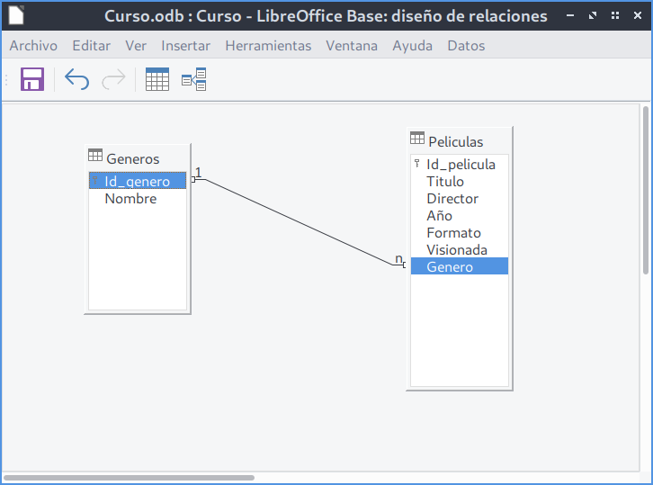
Establecimiento de la relación 1 a n entre las tablas Generos y Peliculas - En el lado de
Para ver o modificar las opciones de la relación creada:
- Hacemos doble clic sobre la línea que une ambas tablas.
- Aparecerá el diálogo Relaciones, donde se configuran aspectos como:
- Qué ocurre si se elimina un género.
- Qué sucede si se modifica el valor de
Id_genero.
Estas opciones permiten controlar el comportamiento de la base de datos y mantener la coherencia de la información.
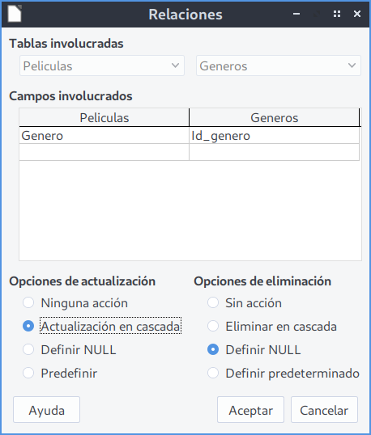
Establecer relaciones muchos a muchos (N a N)¶
En las relaciones muchos a muchos, cada fila de la primera tabla puede estar relacionada con muchas filas de la segunda tabla, y viceversa.
Para resolverlo, creamos una tabla intermedia que contenga, al menos, dos columnas:
- Una columna que apunte a la clave primaria de la primera tabla.
- Otra columna que apunte a la clave primaria de la segunda tabla.
- Para fijar la clave primaria, seleccionamos ambas columnas que apuntan a las tablas relacionadas y las definimos como clave primaria compuesta.
Esta tabla intermedia representa cada relación individual entre las dos tablas.
Ejemplo: Tabla Protagonistas para relacionar Peliculas e Interpretes.
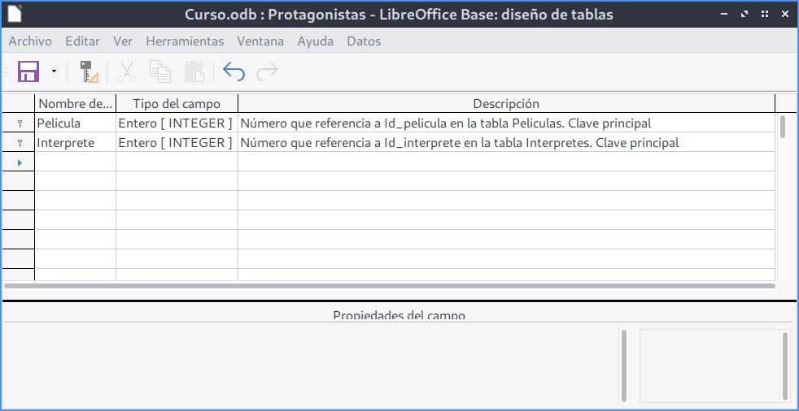
Para establecer las relaciones N a N debemos seguir los siguientes pasos:
- Abrimos Herramientas > Relaciones…
- Añadimos las tablas que queremos relacionar:
-
Peliculas-Interpretes-Protagonistas(tabla intermedia) - Creamos las relaciones uno a muchos entre:
-
Peliculas→Protagonistas-Interpretes→Protagonistas
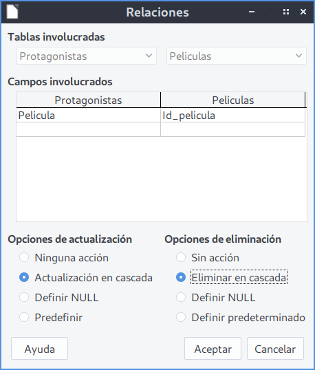
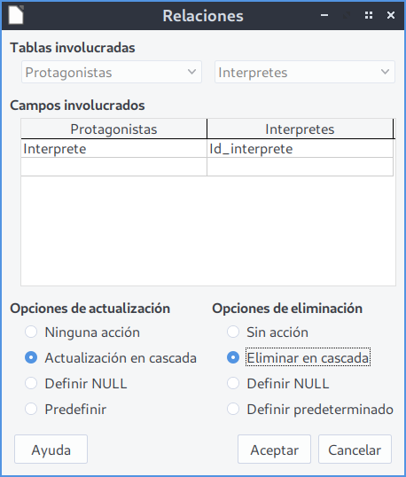
- Obtenemos el siguiente resultado:
La relación original muchos a muchos entre Peliculas e Interpretes se transforma en dos relaciones uno a muchos a través de la tabla Protagonistas.

Referencias¶
Actividad
📝 AA5.5 Relaciones en la base de datos BBDD_Peliculas¶
(C.ESP1 / CE1.1, CE1.2 / IC1-3p)
- Abre la base de datos
BBDD_Pelicula - Crea la tabla
Generosiguiendo los pasos descritos en la unidad. - Crea la tabla
Protagonistassiguiendo los pasos descritos en la unidad. - Crea las relaciones 1 a N y N a N siguiendo los pasos descritos en la unidad.
- Entrega en un Writer con una capturas de pantalla donde se demuestre los pasos para la realización de cada punto del ejercicio y el diagrama final de relaciones entre tablas.
Actividad Refuerzo
🔨 AAR5.6 Relaciones en la base de datos BBDD_Hospital¶
(C.ESP1 / CE1.1, CE1.2 / IC1-3p)
- Abre la base de datos
BBDD_Hospital - Crea las relaciones necesarias.
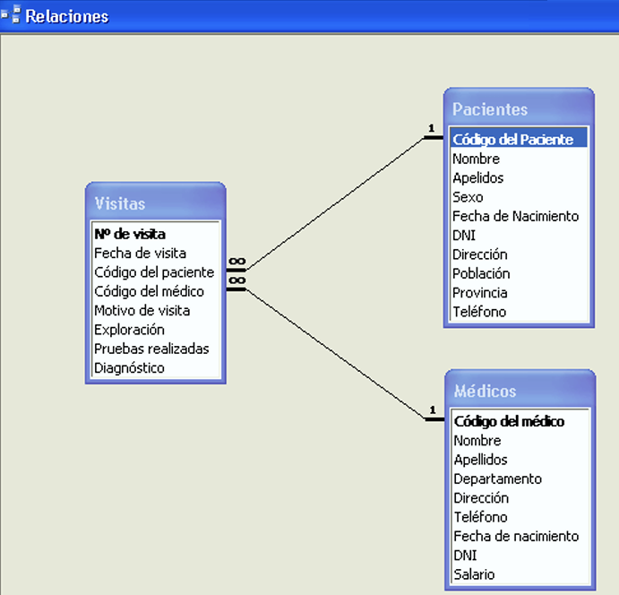
- Entrega en un Writer con una capturas de pantalla donde se demuestre los pasos para la realización de cada punto del ejercicio y el diagrama final de relaciones entre tablas.